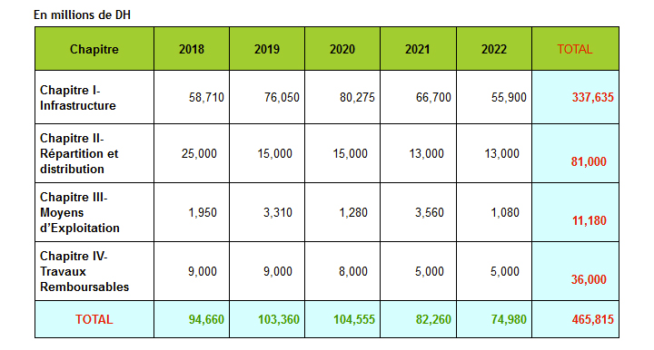

Espace Technique
Assainissement
Prévision 2018-2022
Le Plan Pluriannuel relatif à la période 2018 – 2022 constitue une continuité des ouvrages réalisés durant la période (1998-2016) prévus par le plan directeur d’assainissement liquide du Grand Agadir. Il permettra de réaliser les principaux ouvrages suivants :
- La poursuite des travaux d’équipement en réseau d’assainissement du centre d’Aourir.
- Le système de collecte et de transfert des eaux usées des centres de Drarga vers Tikiouine.
- Le renforcement des équipements ainsi que la réhabilitation et l’aménagement des différentes stations de relevage et de traitement.
- La réhabilitation des collecteurs structurants et des conduites du réseau d’assainissement.
- Le renforcement des dalots pluviaux.
- L’actualisation du Schéma Directeur d’Assainissement et les différentes études et appui à la maitrise d’œuvre.
- La poursuite des travaux du programme de restructuration des quartiers périphériques sous équipés.
- Le renforcement des moyens et outils de gestion de la Régie
- e réseau de réutilisation des eaux épurées (stations de pompage, réservoirs, conduites de refoulement et de distribution) du secteur bas service de la ville d’Agadir et la 1ère tranche du secteur haut service.
Les projets suivants sont inscrits à titre indicatif, leurs études techniques ont été réalisées mais leurs réalisations et tributaire notamment des participations des utilisateurs des eaux usées épurées à réutiliser :
- la première tranche de la station de traitement tertiaire de Taddart.
- les équipements de récupération et de valorisation du biogaz de la STEP M’zar.
- les travaux d’extension des bassins primaires de la STEP.
- Traitement primaire de la saumure à M'Zar
La réalisation des travaux découlant de ce programme permettra d’atteindre les objectifs ci-après :
- La dépollution de la zone Nord d’Agadir.
- L’amélioration de la qualité des eaux de baignade des plages d’Agadir pour les rendre conformes à la catégorie A de la législation marocaine afin d’assurer la durabilité du secteur touristique à vocation balnéaire
- La mobilisation d’une ressource en eau (eau usée épurée) consistante pour sa réutilisation dans l’arrosage des golfs et des espaces verts d’Agadir.
- L’achèvement des travaux d’équipement branchement des quartiers périphériques non encore desservis.
- L’acquisition des moyens d’exploitation et outils de gestion de la Régie
- La réalisation des extensions et branchements particuliers
Le montant prévu pour le programme arrêté par l’actualisation du Plan Directeur d’Assainissement Liquide pour la période 2018 – 2022 s’élève à465,815 Millions DH.
La décomposition par chapitre des inscriptions proposées pour la période 2018 – 2022 est indiquée au tableau, ci-après :
© RAMSA
Realisation 2019